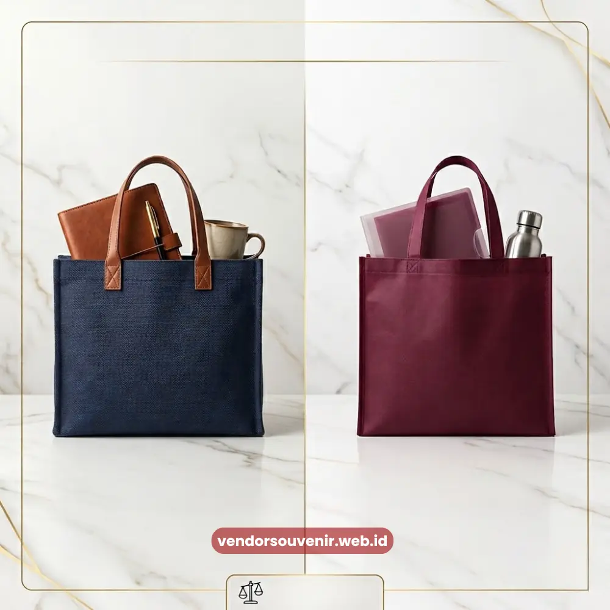
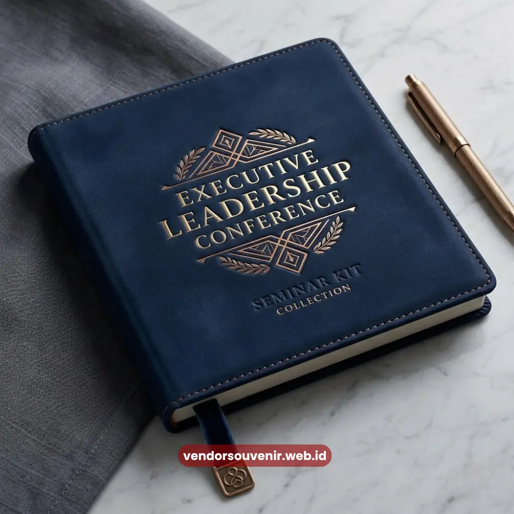

Daftar Isi
Kualitas bahan cetak seminar kit ditentukan oleh jenis material yang digunakan pada tas, notebook, dan komponen lainnya, di mana setiap bahan memiliki karakter ketahanan dan tampilan visual yang berbeda.
Pemilihan bahan yang tepat secara langsung memengaruhi kesan pertama peserta terhadap kualitas dan keseriusan penyelenggaraan acara.
Bagi panitia yang ingin memastikan seminar kit tampil maksimal, memahami karakteristik bahan cetak menjadi langkah penting sebelum menentukan spesifikasi produksi.
Setiap jenis bahan memiliki keunggulan dan pertimbangan tersendiri, baik dari sisi daya tahan, tekstur, maupun kesesuaian dengan teknik cetak tertentu.
Pemahaman ini membantu panitia menyesuaikan pilihan bahan dengan anggaran tanpa mengorbankan kualitas tampilan akhir seminar kit.
- Bahan kanvas menawarkan ketahanan tinggi dan tampilan premium untuk tas seminar kit.
- Bahan spunbond menjadi alternatif ekonomis dengan bobot ringan untuk pemesanan skala besar.
- Jenis kertas notebook, seperti art paper dan HVS, memengaruhi kenyamanan menulis dan tampilan cover.
- Finishing seperti emboss, laminasi doff, atau UV spot dapat meningkatkan kesan premium pada produk cetak.
- Pemilihan tinta yang sesuai jenis permukaan bahan menentukan ketahanan warna terhadap gesekan dan waktu.
Apa Saja Jenis Bahan yang Umum Digunakan untuk Tas Seminar Kit?
Jenis bahan yang umum digunakan untuk tas seminar kit meliputi kanvas, spunbond, dan bahan kombinasi sintetis, yang masing-masing memiliki karakteristik ketahanan dan tampilan berbeda.
Kanvas dikenal memiliki tekstur kain yang kokoh dan tampilan lebih premium, sehingga sering dipilih untuk acara korporat berskala menengah hingga besar yang mengutamakan kesan formal.
Spunbond, di sisi lain, merupakan bahan non-anyaman yang ringan dan lebih ekonomis, sehingga menjadi pilihan populer untuk pemesanan dalam jumlah besar dengan anggaran yang lebih terbatas.
Meskipun demikian, spunbond tetap dapat menghasilkan tampilan rapi dan profesional apabila dikombinasikan dengan teknik sablon yang tepat.
Selain dua bahan tersebut, beberapa penyelenggara acara dengan segmen tertentu turut mempertimbangkan bahan kombinasi seperti kanvas dilapisi laminasi untuk menambah ketahanan terhadap air dan kotoran, terutama untuk acara luar ruangan atau acara dengan durasi multi hari.
Bagaimana Jenis Kertas Memengaruhi Kualitas Notebook Seminar Kit?
Jenis kertas memengaruhi kualitas notebook seminar kit dari sisi kenyamanan menulis, ketebalan, dan daya tahan terhadap tinta yang mudah tembus ke halaman berikutnya.
Kertas HVS dengan gramasi standar umumnya cukup untuk kebutuhan notebook fungsional dengan biaya produksi yang lebih terjangkau, sementara kertas dengan gramasi lebih tinggi menawarkan permukaan menulis yang lebih halus dan minim tembus tinta.
Untuk bagian cover notebook, art paper dengan laminasi doff sering menjadi pilihan karena memberikan tampilan matte yang elegan sekaligus tidak mudah tergores dibandingkan laminasi glossy.
Kombinasi ini banyak dipilih untuk seminar kit korporat karena memberikan kesan profesional tanpa terlihat berlebihan.

Bahan Cetak Berkualitas untuk Seminar Kit
Apakah Finishing Cetak Memengaruhi Kesan Premium Seminar Kit?
Finishing cetak seperti emboss, laminasi doff, dan UV spot terbukti dapat meningkatkan kesan premium pada produk seminar kit dibandingkan cetakan tanpa finishing tambahan. Emboss memberikan tekstur timbul pada logo atau elemen desain tertentu, menciptakan kesan mewah yang mudah dirasakan secara visual maupun sentuhan.
Laminasi doff memberikan permukaan matte yang elegan dan mengurangi silau, sementara UV spot digunakan untuk menonjolkan elemen tertentu, seperti logo, dengan efek glossy kontras di atas permukaan doff.
Kombinasi teknik finishing ini sering digunakan pada seminar kit dengan anggaran menengah ke atas yang menginginkan diferensiasi visual lebih kuat dibandingkan seminar kit standar.
Mengapa Pemilihan Tinta Sablon Penting untuk Ketahanan Warna?
Pemilihan tinta sablon penting untuk ketahanan warna karena setiap jenis permukaan bahan, baik kain maupun plastik, membutuhkan formula tinta yang berbeda agar warna tidak mudah pudar atau retak seiring waktu pemakaian.
Tinta berbasis plastisol misalnya, umumnya digunakan pada bahan kain karena memiliki daya rekat dan ketahanan warna yang baik terhadap gesekan.
Sementara itu, permukaan plastik atau kulit sintetis pada beberapa jenis tas atau map dokumen membutuhkan tinta khusus yang dirancang agar tidak mudah mengelupas.
Kesalahan dalam pemilihan jenis tinta terhadap permukaan bahan dapat menyebabkan hasil cetak cepat pudar meskipun kualitas desain awalnya sudah baik.
Kualitas bahan cetak seminar kit menjadi fondasi utama yang menentukan daya tahan dan kesan visual produk akhir di mata peserta acara.
Pemahaman terhadap karakteristik bahan tas, jenis kertas notebook, teknik finishing, hingga jenis tinta yang sesuai akan membantu panitia menghasilkan seminar kit yang tampil profesional sesuai anggaran yang tersedia.
Untuk mendapatkan rekomendasi kombinasi bahan yang paling sesuai dengan kebutuhan dan anggaran acara Anda, konsultasikan langsung bersama tim Hampers Malang.
Kami siap membantu mewujudkan seminar kit dengan kualitas bahan terbaik sesuai kebutuhan acara Anda.

Butuh Bantuan Memilih Bahan Seminar Kit yang Tepat?
Tim ahli kami siap membantu Anda menyusun paket seminar eksklusif yang menarik dan
fungsional.
Pilihan bahan akan disesuaikan dengan ketersediaan budget dan kebutuhan acara
Anda.
Seluruh desain akan kami selaraskan dengan identitas visual perusahaan.
Dapatkan penawaran harga terbaik untuk pesanan massal!
FAQ Seputar Bahan Cetak Seminar Kit
Bahan apa yang paling tahan lama untuk tas seminar kit?
Kanvas umumnya lebih tahan lama dibandingkan spunbond karena tekstur kainnya lebih kokoh, meskipun spunbond tetap menjadi pilihan ekonomis yang layak untuk pemesanan skala besar.
Apakah laminasi doff lebih baik dibandingkan glossy untuk notebook?
Laminasi doff cenderung dipilih untuk kesan elegan dan minim silau, sementara glossy memberikan kesan lebih cerah, sehingga pemilihannya kembali pada preferensi tema acara.
Apakah semua bahan bisa menggunakan teknik finishing emboss?
Tidak semua bahan cocok dengan teknik emboss, karena teknik ini umumnya lebih optimal pada permukaan kertas atau bahan tertentu yang mendukung proses timbul.
Maroon Souvenir
Partner Corporate Gift terpercaya di Indonesia. Berpengalaman melayani ratusan perusahaan sejak 2018.
Lihat Portofolio Kami